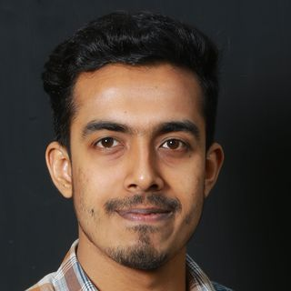

দৈনিক যানজট
সম্পাদক

Omar Faruqe Riyad
Software engineer in Dhaka. Made বাপের রাস্তা.
“I miss 100% of the chances I take.”
দৈনিক যানজট
সম্পাদক

Software engineer in Dhaka. Made বাপের রাস্তা.
“I miss 100% of the chances I take.”